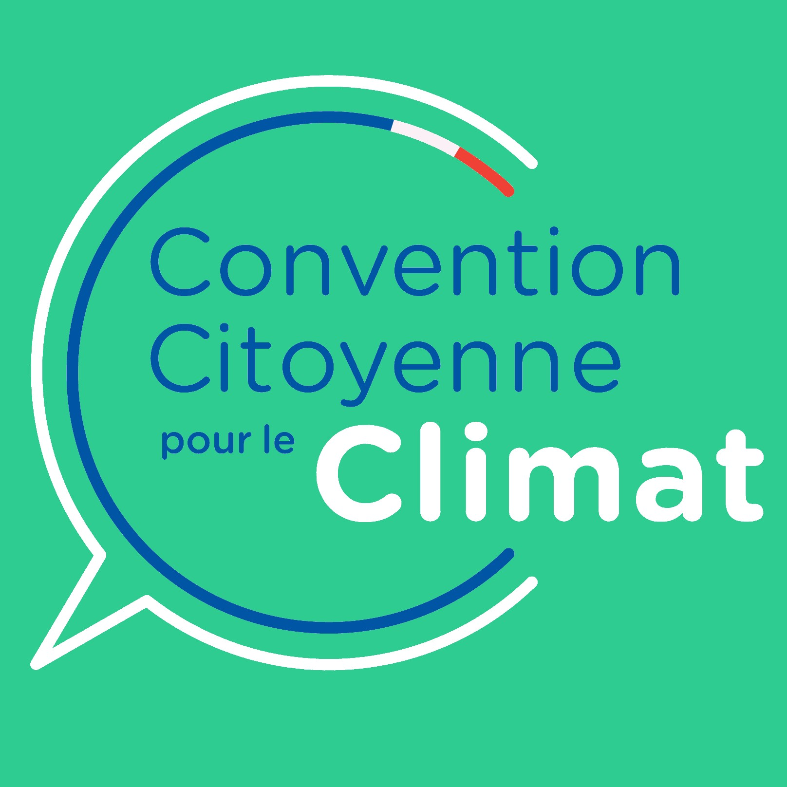

Bonjour à tou·te·s, bienvenue aux nouvelles et aux nouveaux, bienvenue sur la newsletter de PAPET&CO !
ACTU | LES RENDEZ-VOUS À VENIR
Tous
LES 4 DU MOIS, nous vous proposons de se retrouver tous ensemble, pour une réunion générale, en présentiel, afin d’échanger autour des actualités de PAPET&CO et partager un moment de convivialité, en préparant les prochains ateliers et autour d'un bon thé !
La prochaine réunion aura lieu au Centre Social et Culturel "Les Acacias", merci pour leur accueil et leur soutien !
Nous proposons deux ateliers de fabrication le
SAMEDI 11 MARS et le
MERCREDI 22 MARS, n'oubliez pas de vous inscrire auprès de nos partenaires :
- Les Acacias : 01.47.29.13.12 - acaciasaccueil@gmail.com
- La Ressourcerie Le Cercle : atelier_upcycling@ressourcerie-lecercle.fr
Celui du
MERCREDI 15 MARS à l'Epicerie Rose est ouvert à toutes et tous !
NOS ACTIONS | RETOUR SUR ROULE PAPET !
Le projet
ROULE PAPET !, c'est notre tour estival de Nanterre à bord d'un vélo cargo pour distribuer des livres aux habitant.e.s de plusieurs quartiers de Nanterre. Au cours de ces rendez-vous réguliers,
plus de 480 livres ont pu être réemployés grâce à vous.
Nous avons collecté de nombreux dons de particuliers mais surtout de nos partenaires, les livres issus de la Ressourcerie Le Cercle (Nanterre) ont été particulièrement mis en avant, ainsi que ceux du réseau des médiathèques.
Le prêt gratuit du Vélo cargo de l'Association Nanterre en Transition (ANET) a permis à l’opération d'attirer de nombreux curieux et de coûter presque 0 €.
La participation aux terrasses d'été (celles organisées par la Ville de Nanterre et celles du centre social et culturel La Traverse) a permis une bonne visibilité et de donner un maximum de livres.
Nous les remercions toutes et tous chaleureusement et leur donnons rendez-vous, et à vous aussi, pour la prochaine étape : la création d'un café-librairie éphémère à l'été 2023 !
Nous sommes à la recherche de bénévoles pour des petites actions locales, par exemple :
- aider au tri des livres d’occasion,
- participer à l'aménagement de notre local de stockage,
- contribuer à la préparation d'ateliers de fabrication,
- participer à des permanences et des animations, par exemple des lectures,
- fabriquer et tester des animations pour les événements.
Nous faisons une liste de contacts à qui envoyer des mails en cas de besoin ponctuels, pour que les membres de l'association soient accompagné.es dans leurs actions.
Si vous souhaitez recevoir ces sollicitations, n'hésitez pas à nous écrire :
Vous pouvez aussi continuer à nous soutenir, voire nous rejoindre, en suivant ces deux liens :
Soutenir
Adhérer

CONVENTION CITOYENNE
POUR LE CLIMAT
Nous nous sommes penché.es sur le rapport final de la Convention Citoyenne (2020) pour étudier plus précisément les mesures proposées quant à la filière papier/carton.
Lire notre synthèse

NEWSLETTERS
Vous pouvez retrouver les précédentes newsletters de mai, juillet et novembre 2022 sur le site, en suivant ce lien !
En savoir plus

BOÎTE À IDÉES
Vous avez une suggestion, une remarque, un projet dont vous souhaitez nous faire part ? N'hésitez pas à utiliser notre boîte à idées !
En savoir plus
Si vous êtes dans cette liste de diffusion, c'est que vous avez probablement croisé un·e de nos membres
et que vous avez accepté de recevoir de nos nouvelles. Vous pouvez revenir sur votre décision en nous envoyant un mail,
ou au contraire nous proposer d'ajouter quelqu'un (avec son consentement) !